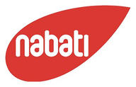
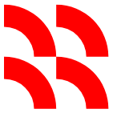

Data Modeling & Warehousing
Building reliable data models with SQL, Python, and cloud data warehousing such as Amazon Redshift.
I turn complex business data into actionable insights — through data modeling, automated reporting, and strategic dashboards — and use AI-powered solutions to make analytics faster and smarter.
A strong collaborator who translates business needs into effective data solutions in fast-paced environments.
Building reliable data models with SQL, Python, and cloud data warehousing such as Amazon Redshift.
Strategic Power BI dashboards and automated reports that replace manual work and support decision-making.
Leveraging LLM-based solutions to enhance analytics capabilities, streamline business processes, and accelerate feature development.
Working closely with stakeholders to turn business questions into clear metrics, analyses, and actionable insights.
Dashboards and apps I've built across FMCG manufacturing and financial services. Select a project to see the full story.
An app-style dashboard built with a Microsoft Fabric app and React that brings every General Affairs area at the plant into one executive summary.
One place to monitor all GA operations, from condition to cost
An application-style dashboard built with a Microsoft Fabric app and React. It is the General Affairs (GA) team's main monitoring tool: an executive summary of every GA area at the plant, backed by detailed modules for inventory stock, vehicles and transport, cleaning service, WWTP (wastewater treatment plant), CCTV maintenance, the bad-stock workflow, utility maintenance, and petty cash. Each area is monitored from its operating condition through to its cost.
Highlights
Among the first to help Mega Finance develop business intelligence dashboards, and taught teams nationwide how to build and use Power BI.
Monitoring and reporting more than 80% faster
I was among the first people to help Mega Finance develop business intelligence (BI) dashboards. Alongside building them, I explained to teams across the country, in meetings and employee training sessions, how to develop and use Power BI.
Highlights
Shows management and supervisors how quickly customer financing applications are processed at every branch nationwide, and where each incoming order stands.
Customer-acquisition SLA improved by around 70%
Used by everyone from management to supervisors to monitor the SLA for processing customer financing applications at branches nationwide. Management can drill down to the branches and PICs with poor SLA performance to evaluate them, and recognize those performing well so the standard is maintained. The dashboard also tracks the orders coming in to Mega Finance from each branch and the processing stage each order has reached.
Highlights
Monitors cost of goods manufactured (COGM) against standard, from the efficiency of each cost component down to the PICs responsible for it.
Shows which cost components are spending inefficiently
Monitors cost of goods manufactured (COGM), the total cost of producing finished goods, from the efficiency of each cost component down to the people (PICs) responsible for it. By comparing actual cost with the standard, it shows which components are spending more than they should because they are not being used effectively, and which are already on track.
Highlights
Tracks out-of-stock (OOS) trends for every domestic logistics depot and product, so the PPIC team can act before stock runs out.
Lower risk of out-of-stock across depots and products
Monitors the out-of-stock (OOS) trend at each domestic logistics depot and for each product. When a depot or product is close to stocking out, or its days of inventory (DOI) are nearly exhausted, the PPIC (production planning and inventory control) team can act right away.
Highlights
Helps the Talent Acquisition team track how open positions are being filled, where each candidate is in the hiring process, and every PIC's SLA.
Faster position fulfillment and better candidate selection
Helps Nabati's Talent Acquisition (TA) team monitor the fulfillment of the positions the business needs and the recruitment stage each candidate has reached. It also shows each candidate's quality and qualifications, and tracks the SLA of every TA PIC.
Highlights
Monitors the approval rate of every PIC and branch nationwide, and shows which customer types are most likely to become problematic.
Better customer quality and fewer payment defaults
Helps management monitor the approval rate (the share of financing applications that are approved) of every PIC and branch nationwide. It shows which customer types tend to become problematic, giving management a basis for new policies on which customer profiles to prioritize for financing. It also reveals which PICs and branches approve customers carelessly, so they can be reprimanded.
Highlights
Monitors First Installment Default (FID) to set each branch's financing tier, and keeps a close watch on large B2B loans.
Data-driven financing tiers for every branch
Monitors First Installment Default (FID), when a customer misses their very first installment, month-to-date (MTD) and month-to-month (MoM). Based on FID, management sets each branch's financing tier for the following month: the better a branch's FID, the larger the loans it can offer, and vice versa. The dashboard also monitors B2B customers, whose loans are large, so their FID can be watched closely to keep payments on track.
Highlights
The overseas counterpart of OOS monitoring, tracking out-of-stock trends per country, depot, and product across export markets.
Early warning on out-of-stock across overseas markets
The overseas counterpart of the domestic OOS dashboard. It monitors the out-of-stock trend for every overseas depot and product, so the PPIC team can act quickly when a depot or product is close to stocking out or its days of inventory (DOI) are nearly exhausted.
Highlights
Monitors stock at every depot and for each product overall, to find surplus stock that can be moved to depots facing out-of-stock.
Surplus stock reallocated to depots at risk of OOS
Monitors how much stock each depot holds and how much stock each product has overall. When a depot has surplus stock, it can be sent to help a depot that is out of stock.
Highlights
The overseas counterpart of inventory monitoring, showing stock and days of inventory per country, plant, and product.
Stock balanced across overseas markets to reduce OOS
The overseas counterpart of the domestic inventory dashboard. It monitors stock per country, plant, and product, so surplus stock can be allocated to markets or depots that are running out.
Highlights
Monitors purchase price variance in logistics procurement, so spending stays close to budget rather than far above or below it.
Logistics procurement cost kept under control
Monitors purchase price variance (PPV), the gap between the actual price paid and the projected or budgeted price, for logistics procurement. The goal is to keep procurement funds from being allocated far too much or far too little: spending should stay within the normal range, or only slightly above or below it.
Highlights
Shows which raw and packaging materials (RMPM) can still be returned to vendors, so Nabati can recover all or part of their value.
Money recovered from returnable raw and packaging materials
Shows which RMPM (raw material and packaging material) items can still be returned, so Nabati can recover all or part of their value from the RMPM vendors that supply its production.
Highlights
A paginated report that powers automated emails to each vendor about outstanding purchase orders, to prevent late deliveries and follow up on late ones.
Automated vendor reminders that help prevent late deliveries
A paginated report used to send automated emails to each vendor about their outstanding purchase orders (OS PO), meaning POs that have not been fully delivered yet. The emails remind vendors of upcoming deliveries so they arrive on time, and follow up when a delivery is already late.
Highlights
The stack I use to collect, model, visualize, and automate data.
Analytics, mentoring, and teaching roles across manufacturing, financial services, and education.


A mathematics foundation, an intensive machine learning program, and hands-on organizational leadership.
Competitions and programs where my work was recognized.
Won first place in a competition that challenged participants to analyze data and communicate the findings as a clear, compelling infographic.
Our capstone project, Redmine, ranked among the top 53 out of 433 teams (roughly the top 12%). I contributed as the team's Machine Learning Developer.
See the Redmine projectThings I've built and run outside my main role.
TENTIR.ID is a website that helps high school students in Indonesia prepare for university entrance. As a co-founder, I handle everything related to data, and use AI prompting to generate practice questions.
An interactive app that connects blood donors with patients in urgent need: donate blood, find donors, post donor requests, and follow an interactive schedule.
Open to collaboration or a discussion about your next data project. The fastest way to reach me is by email or LinkedIn.